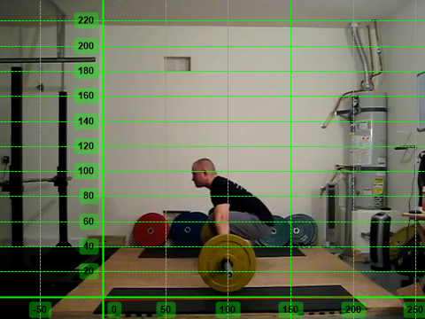
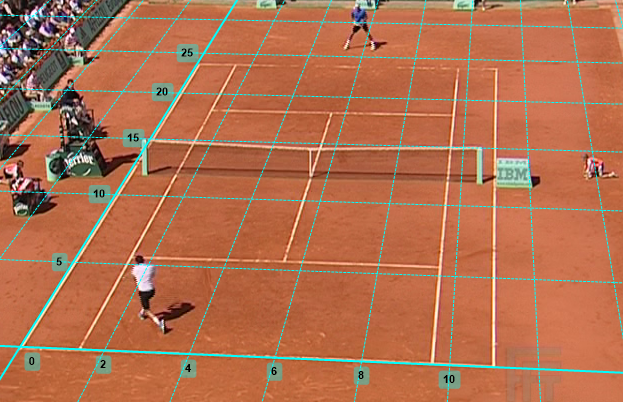

Coordinate system¶
All measurements are based on the coordinate system defined by the current calibration.
To show or hide the coordinate system use the menu .
Line calibration¶
The first placed point of the line becomes the default origin of the coordinate system. The line direction becomes an axis of the coordinate system based on the option selected in Coordinate system alignment.
The following alignment options are available:
The line defines the horizontal axis
The line defines the vertical axis
Aligned to image axes
If Align to image axes is selected the orientation of the line is ignored.
Plane calibration¶
The bottom-left corner of the grid becomes the origin of the coordinate system. The coordinate system axes are aligned with the calibration grid object.
Origin of the coordinate system¶
The coordinate system’s origin is independent from the calibration object. It can be moved around by dragging the axes.